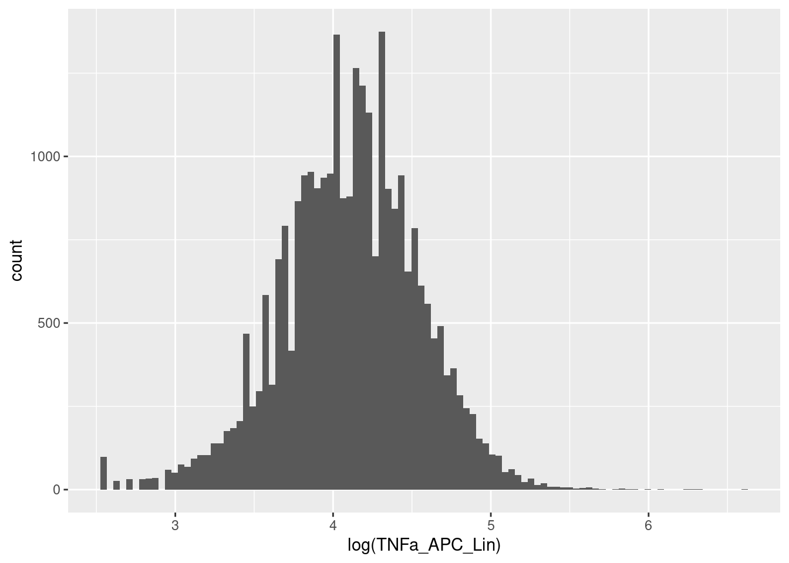
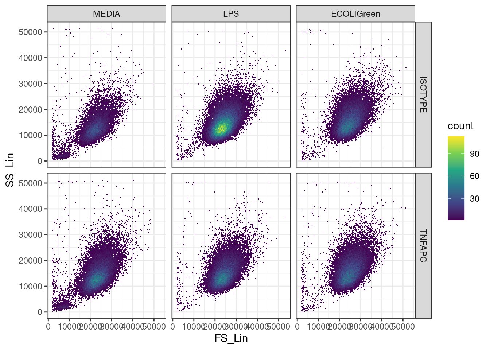
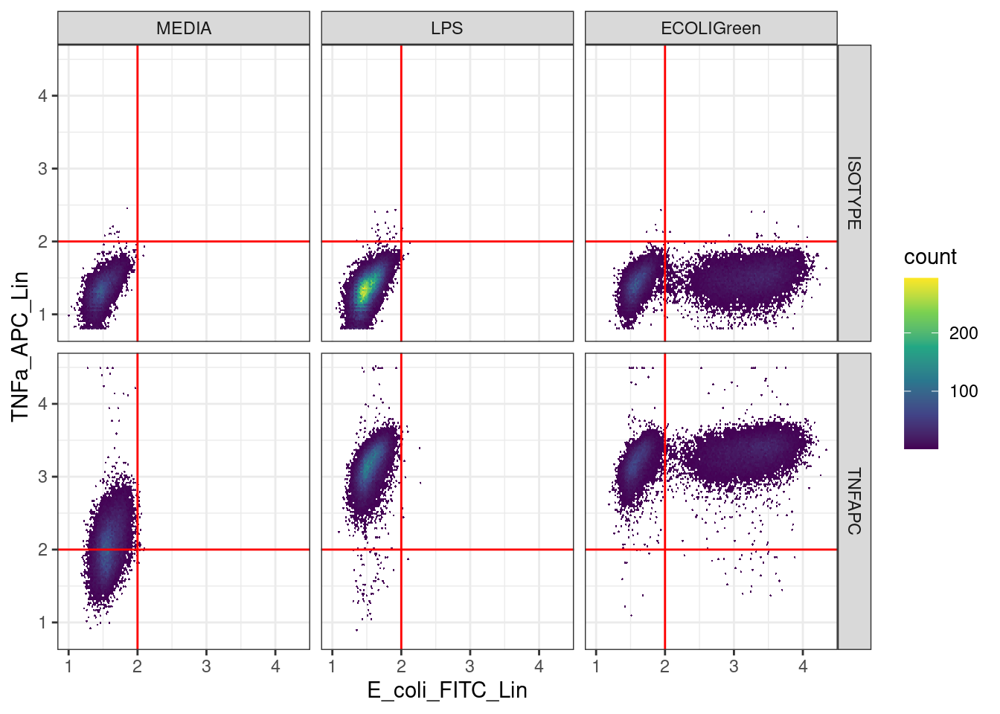

Workshop
Data Analysis 2: Immunobiology - Sample data analysis
Introduction
Session overview
In this workshop you will learn how to analyse some sample flow cytometry data.
Exercises
Set up a Project
🎬 Start RStudio from the Start menu
🎬 Make an RStudio project. Be deliberate about where you create it so that it is a good place for you
🎬 Use the Files pane to make a folders for the data. I suggest data-raw/ and data-meta/
🎬 Make a new script called sample-data-analysis.R to carry out the rest of the work.
🎬 Record what you do and what you find out. All of it! Make notes on the inputs and outputs of each command. This will help you work out problems analysing your own data.
Load packages
We need three packages for this workshop:
tidyverse(Wickham et al. 2019): importing the meta data which is in a text file, working with the data once it is in a dataframe to filter, summarise and plot.flowCore(Ellis et al. 2024): to import data from flow cytometry files (.fcs), apply the logicle transformation, and use functions for using a “flowSet” data structure.flowAI(Monaco et al. 2016): which performs automated quality control by checking for changes in instrument speed and signal intensity that indicate a problem for the reading for that cells
These packages are installed already. You can go straight to loading them.
You will need to install these packages.
You can install tidyverse from CRAN in the normal way.
flowCore and flowAI are not on CRAN but come from Bioconductor.
first install
BiocManagerfrom CRAN in the normal way.then install from Bioconductor using
BiocManager::install("flowCore")andBiocManager::install("flowAI")
If you have difficulty installing these packages, use the Virtual Desktop Service which allows you to log into a university machine from your laptop.
🎬 Load tidyverse,flowCore and flowAI
Note: Load tidyverse last because flowCore also has some functions with the same names as functions in tidyverse and you will want the tidyverse ones.
Import the data
There are six data files, one for each treatment and antibody combination:
- ECOLIGreen_ISOTYPE.fcs
- ECOLIGreen_TNFAPC.fcs
- LPS_ISOTYPE.fcs
- LPS_TNFAPC.fcs
- MEDIA_ISOTYPE.fcs
- MEDIA_TNFAPC.fcs
🎬 Save copies of each file (right click and save as) to your data-raw/ folder.
These are six files associated with one experiment.
We are going to use the command read.flowSet() from the flowCore package to import the data. In R, the data from one file is stored in a “flowFrame” object. A flowFrame is a data structure in the same way that a dataframe or a vector is a data structure. A flowFrame has “slots”. The first slot is called exprs and contains the data itself in matrix which looks just like a dataframe. The second is called parameters and contains the names of the columns in exprs. The third is called description and contains information about the .fcs file.
A “flowSet” is a list of flowFrames which are related. They are related in that they have the same column names, came off the same machine, and are part of the same experiment. Such data needs to be treated int he same way which is why it is useful to have a structure like a flowSet.
🎬 Make a variable to hold the file names:
myfiles <- list.files("data-raw", pattern = ".fcs$")list.files() will return a character vector of the names of the files data-raw/. The pattern argument is a “regular expression” which is used to filter the names of the files. Here we are asking for the names of the files which end in .fcs. This would be very useful if you had other file types in that folder. In our case, there are only .fcs files in that folder.
Type myfiles to check it contains what you expect.
🎬 Use read.flowSet() to import the files from the folder data-raw/ that are listed in the variable myfiles and name the resulting flowSet fs:
fs <- read.flowSet(myfiles,
path = "data-raw")Explore the data structure
🎬 Type fs to see what it contains:
fs A flowSet with 6 experiments.
column names(22): TIME Time MSW ... FL 8 Log Event CountWe can use a list index to access the first flowFrame in the flowSet.
🎬 Type fs[[1]] to see the information about the first flowFrame in the flowSet:
fs[[1]] flowFrame object 'ECOLIGreen_ISOTYPE.fcs'
with 50000 cells and 22 observables:
name desc range minRange maxRange
$P1 TIME Time LSW 65536 0 65535
$P2 Time MSW Time MSW 65536 0 65535
$P3 Pulse Width Pulse Width 512 0 511
$P4 FS Lin FS 65536 0 65535
$P5 FS Area FS 65536 0 65535
... ... ... ... ... ...
$P18 FL 3 Log PE-Texas Red 65536 1 10000
$P19 FL 8 Lin APC 65536 0 65535
$P20 FL 8 Area APC 65536 0 65535
$P21 FL 8 Log APC 65536 1 10000
$P22 Event Count Event Count 65536 0 65535
278 keywords are stored in the 'description' slot🎬 You can use the exprs() function to access the actual data and pipe it to View() to show it in a window:
🎬 List the column names in each of the flowFrames:
colnames(fs) [1] "TIME" "Time MSW" "Pulse Width" "FS Lin" "FS Area"
[6] "FS Log" "SS Lin" "SS Area" "SS Log" "FL 1 Lin"
[11] "FL 1 Area" "FL 1 Log" "FL 2 Lin" "FL 2 Area" "FL 2 Log"
[16] "FL 3 Lin" "FL 3 Area" "FL 3 Log" "FL 8 Lin" "FL 8 Area"
[21] "FL 8 Log" "Event Count"Improve the column names
Names like FL 1 meaning “fluorescence channel 1” are not very informative. In our experiment we also only used channel 1 and channel 8. A list of more useful column names are given in meta.csv. We can import this file and use the resulting dataframe to rename columns in our flowFrames.
🎬 Save a copy of the file (right click and save as) to your data-meta/ folder
🎬 Import the meta data and examine it:
meta <- read_csv("data-meta/meta.csv")| name | desc | range | minRange | maxRange |
|---|---|---|---|---|
| TIME | Time LSW | 65536 | 0 | 65535 |
| Time_MSW | Time MSW | 65536 | 0 | 65535 |
| Pulse_Width | Pulse Width | 512 | 0 | 511 |
| FS_Lin | FS | 65536 | 0 | 65535 |
| FS_Area | FS | 65536 | 0 | 65535 |
| FS_Log | FS | 65536 | 1 | 10000 |
| SS_Lin | SS | 65536 | 0 | 65535 |
| SS_Area | SS | 65536 | 0 | 65535 |
| SS_Log | SS | 65536 | 1 | 10000 |
| E_coli_FITC_Lin | E_coli_FITC | 65536 | 0 | 65535 |
| E_coli_FITC_Area | E_coli_FITC | 65536 | 0 | 65535 |
| E_coli_FITC_Log | E_coli_FITC | 65536 | 1 | 10000 |
| delete_1_Lin | delete_1 | 65536 | 0 | 65535 |
| delete_1_Area | delete_1 | 65536 | 0 | 65535 |
| delete_1_Log | delete_1 | 65536 | 1 | 10000 |
| delete_2_Lin | delete_2 | 65536 | 0 | 65535 |
| delete_2_Area | delete_2 | 65536 | 0 | 65535 |
| delete_2_Log | delete_2 | 65536 | 1 | 10000 |
| TNFa_APC_Lin | TNFa_APC | 65536 | 0 | 65535 |
| TNFa_APC_Area | TNFa_APC | 65536 | 0 | 65535 |
| TNFa_APC_Log | TNFa_APC | 65536 | 1 | 10000 |
| Event_Count | Event_Count | 65536 | 0 | 65535 |
The first column gives the name of the column we would like to use. The columns labelled with “delete” were not used and we will be able to drop them.
🎬 Assign the names in meta$name to the columns in the flowFrames:
[1] "TIME" "Time_MSW" "Pulse_Width" "FS_Lin"
[5] "FS_Area" "FS_Log" "SS_Lin" "SS_Area"
[9] "SS_Log" "E_coli_FITC_Lin" "E_coli_FITC_Area" "E_coli_FITC_Log"
[13] "delete_1_Lin" "delete_1_Area" "delete_1_Log" "delete_2_Lin"
[17] "delete_2_Area" "delete_2_Log" "TNFa_APC_Lin" "TNFa_APC_Area"
[21] "TNFa_APC_Log" "Event_Count" Drop the unused channels (columns)
🎬 subset the flowSet to include only the columns we are interested in:
fs <- fs[, c(1:12, 19:22)]This means columns 13 to 18 are dropped. Note that those columns are dropped in every flowFrame in the flowSet. That’s the power of the flowSet data structure.
colnames(fs) [1] "TIME" "Time_MSW" "Pulse_Width" "FS_Lin"
[5] "FS_Area" "FS_Log" "SS_Lin" "SS_Area"
[9] "SS_Log" "E_coli_FITC_Lin" "E_coli_FITC_Area" "E_coli_FITC_Log"
[13] "TNFa_APC_Lin" "TNFa_APC_Area" "TNFa_APC_Log" "Event_Count" Quality control 1: Automated instrument issues
flowAI is a package that provides a set of tools for automated QC of flow cytometry data. It checks for:
- changes in instrument speed,
- changes signal intensity
- cells that are outside the dynamic range
It generates a new flowSet with the problematic events removed along with a folder containing filtered .fcs files and a quality control report in html format. It will take a few minutes to do all files.
🎬 Run the automated quality control:
Quality control for the file: ECOLIGreen_ISOTYPE
43.33% of anomalous cells detected in the flow rate check.
0% of anomalous cells detected in signal acquisition check.
0% of anomalous cells detected in the dynamic range check.
Quality control for the file: ECOLIGreen_TNFAPC
44.96% of anomalous cells detected in the flow rate check.
0% of anomalous cells detected in signal acquisition check.
0% of anomalous cells detected in the dynamic range check.
Quality control for the file: LPS_ISOTYPE
6.39% of anomalous cells detected in the flow rate check.
0% of anomalous cells detected in signal acquisition check.
0% of anomalous cells detected in the dynamic range check.
Quality control for the file: LPS_TNFAPC
46.56% of anomalous cells detected in the flow rate check.
0% of anomalous cells detected in signal acquisition check.
0% of anomalous cells detected in the dynamic range check.
Quality control for the file: MEDIA_ISOTYPE
45.73% of anomalous cells detected in the flow rate check.
0% of anomalous cells detected in signal acquisition check.
0% of anomalous cells detected in the dynamic range check.
Quality control for the file: MEDIA_TNFAPC
45.85% of anomalous cells detected in the flow rate check.
0% of anomalous cells detected in signal acquisition check.
0% of anomalous cells detected in the dynamic range check. fs_clean <- flow_auto_qc(fs,
folder_results = "sample-QC")❓ What has been removed through the QC process?
❓ What is in the folder “sample-QC”?
This is an example report: ECOLIGreen_TNFAPC flowAI report
Plot distributions
Plotting the distributions of our variables is very useful for getting an overview of our data. We’ll just look at the first flowFrame to get over the principles.
🎬 Plot the distribution of the TNFa_APC signal in the first flowFrame in the flowSet:
exprs(fs_clean[[1]]) |>
data.frame() |>
ggplot(aes(x = TNFa_APC_Lin)) +
geom_histogram(bins = 100)
This is a very skewed distribution which makes visualisation hard. It is common to log skewed distributions to improve visualisation. We have a column called TNFa_APC_Log so let’s look at that.
🎬 Plot the distribution of TNFa_APC_Log :
exprs(fs_clean[[1]]) |>
data.frame() |>
ggplot(aes(x = TNFa_APC_Log)) +
geom_histogram(bins = 100)
Hmmmm, The column labelled Log, does not seem to be.
🎬 Plot the distribution of the logged TNFa_APC_Lin column:
exprs(fs_clean[[1]]) |>
data.frame() |>
ggplot(aes(x = log(TNFa_APC_Lin))) +
geom_histogram(bins = 100)
Now our data are easier to see.
Transform the data
In fact, we will apply a different transformation called “logicle” (Parks, Roederer, and Moore 2006). This transformation is has a similar effect as logging but avoids some problems that can occur with flow cytometry data and especially flow cytometry data that have been “compensated” . Compensation is routinely applied to flow cytometry data to correct for fluorophores being detected in in multiple channels. This was not a problem in our experiment.
A transformation is applied in two steps: the transformations needed is estimated from the data and then that transformation is applied.
We need to apply the transformation only to apply it to the TNFa_APC_Lin and E_coli_FITC_Lin columns. These in the 10th and 13th columns of the flowFrames.
🎬 Estimate the transformation from the data:
trans <- estimateLogicle(fs_clean[[1]],
colnames(fs_clean[,c(10, 13)]))🎬 Apply the transformation to all theTNFa_APC_Lin and E_coli_FITC_Lin columns the flowSet:
# apply the transformation
fs_clean_trans <- transform(fs_clean, trans)🎬 Examine the effect:
exprs(fs_clean_trans[[1]]) |>
data.frame() |>
ggplot(aes(x = TNFa_APC_Lin)) +
geom_histogram(bins = 100)
That looks better.
Make data easier to work with
We are going to get the data from the flowSet and put in a dataframe. FlowCore contains many functions for gating (filtering), plotting and summarising flowSets but putting the data into a dataframe will make it easier for you to use tools you already know and understand what you are doing.
We will be using familiar tools like group_by() and summarise(), filter() and ggplot()
🎬 Put the transformed data into a data frame:
# Put into a data frame for ease of use
clean_trans <- fsApply(fs_clean_trans, exprs) |> data.frame() fsApply(flowSet, function) applies a function to every flowFrame in a flowSet. Here we are accessed the data matirx in each with exprs().
The are 171245 rows (cells) in the dataset. You can view it by clicking on the dataframe in the Environment. At the moment, we cannot tell which row (cell) is from which sample. We can add the sample names as a column in that dataframe.
Each sample name needs to appear as many times as there are cells (events) in the corresponding flowFrame. For example,
dim(fs_clean_trans[[1]])["events"]is 28335 cells.sampleNames(fs_clean_trans)gives the names of the samples.We can use the
rep()function to repeat the sample names the correct number of times.
🎬 Add the sample name to each row:
clean_trans <- clean_trans |>
dplyr::mutate(sample = rep(sampleNames(fs_clean_trans),
times = c(dim(fs_clean_trans[[1]])["events"],
dim(fs_clean_trans[[2]])["events"],
dim(fs_clean_trans[[3]])["events"],
dim(fs_clean_trans[[4]])["events"],
dim(fs_clean_trans[[5]])["events"],
dim(fs_clean_trans[[6]])["events"])))The sample name contains the information about which antibody and treatment the sample was. Our analysis will be a little easier if we add this information to separate columns. We can extract the antibody and treatment from the sample name using the extract() function and two “regular expressions”.
🎬 Add columns for treatment and antibody by extracting that information from the sample name:
- the sample name is treatment_antibody
- each pattern matching the treatment and antibody is enclosed in parentheses
- we want to keep those patterns to go in the new columns
- the underscore is matched but not enclosed in parentheses so it is not kept
-
.fcsis matched but not enclosed in parentheses so it is not kept - the
remove = FALSEargument means that the original column is kept -
[]enclose a set of characters -
a-zmeans any lower case letter,A-Zmeans any upper case letter so[a-zA-Z]means any letter -
+means one or more of the preceding character set - so
[a-zA-Z]+means one or more letters
🎬 View the dataframe to see the new columns.
Our treatments have an order. Media is the control, LPS should be next and ECOLIGreen should be last. We can use the fct_relevel() function to put groups in order so that our graphs are better to interpret.
clean_trans <- clean_trans |>
mutate(treatment = fct_relevel(treatment, c("MEDIA",
"LPS",
"ECOLIGreen")))Save the data
We have cleaned and transform our data. It is a good idea to save it at this point so that we can start from here if we need to.
🎬 Save the data:
write_csv(clean_trans, "data-processed/ai_clean_logicle_trans.csv")Quality control 2: ‘Gating’ to Removing debris
Some of the cells will have died and broken during the experiment. We need to perform quality control on our data to remove observations that have that have the size and granularity that is not typical of a live cell. This is done by filtering on the forward scatter (size) and side scatter (granularity) channels.
In flow cytometry, it is common to describe filtering as “gating” and the observations (cells) being kept as “in the gate”.
We create a scatter plot of the forward scatter (size) and side scatter (granularity) for each sample to see where we should put the gate.
We could use geom_point() but many points will overlap so it is difficult to see the density of points. geom_hex() puts the points in bins and colours the bin with the number of points.
🎬 Plot the forward scatter and side scatter for each sample
ggplot(clean_trans, aes(x = FS_Lin, y = SS_Lin)) +
geom_hex(bins = 128) +
scale_fill_viridis_c() +
facet_grid(antibody ~ treatment) +
theme_bw()
We can see a cloud of points in the middle of the plot. This is where the cells are. There are also a lot of points in the bottom left corner. These are likely to be debris. We can draw a gate around the cloud of points to remove the debris. We should use the same filter/gate on all six data sets for consistency. The gates can be a rectangle, polygon, or ellipse. We will use a rectangle first.
Manual rectangular gate
Use the zoom on the plot window to better see the cloud of points and the axis values. You need to use minimum and maximum \(x\) and \(y\) values to define the rectangle. I chose the the values below but you might judge the gate differently.
🎬 Define the minimum and maximum \(x\) and \(y\) values for the gate:
xmin <- 15000
xmax <- 35000
ymin <- 7500
ymax <- 28000🎬 Put those values in a dataframe so we can plot the gate on the hexbin plot:
box <- data.frame(x = c(xmin, xmin, xmax, xmax),
y = c(ymin, ymax, ymax, ymin))🎬 Plot the forward scatter and side scatter for each sample with the gate:
ggplot(clean_trans, aes(x = FS_Lin, y = SS_Lin)) +
geom_hex(bins = 128) +
scale_fill_viridis_c() +
geom_polygon(data = box, aes(x = x, y = y),
fill = NA,
color = "red",
linewidth = 1) +
facet_grid(antibody ~ treatment) +
theme_bw()
🎬 Adjust the values of xmin, xmax, ymin, and ymax to get a gate that you are happy with.
We have drawn the gate on the plot but we need to use it to filter out the debris (rows) from our data. We want only the cells with FS_Lin values that are between the xmin and xmax and SS_Lin that are between ymin and ymax values we chose.
🎬 Filter the data to remove the debris:
clean_trans_nondebris now has 161010 cells. We should report how many cells were in the gate for each sample.
🎬 Find the number of cells in each sample after flowAI cleaning:
| antibody | treatment | n |
|---|---|---|
| ISOTYPE | MEDIA | 14788 |
| ISOTYPE | LPS | 46806 |
| ISOTYPE | ECOLIGreen | 28335 |
| TNFAPC | MEDIA | 27076 |
| TNFAPC | LPS | 26722 |
| TNFAPC | ECOLIGreen | 27518 |
🎬 Find the number of cells in each sample after flowAI cleaning and removing debris
| antibody | treatment | n_nondebris |
|---|---|---|
| ISOTYPE | MEDIA | 13106 |
| ISOTYPE | LPS | 45138 |
| ISOTYPE | ECOLIGreen | 26866 |
| TNFAPC | MEDIA | 24419 |
| TNFAPC | LPS | 25479 |
| TNFAPC | ECOLIGreen | 26002 |
🎬 Join two data frames together using the combination of the treatment and the antibody and calculate what % cells were removed from each sample:
| antibody | treatment | n_nondebris | n | perc_nondebris |
|---|---|---|---|---|
| ISOTYPE | MEDIA | 13106 | 14788 | 88.6 |
| ISOTYPE | LPS | 45138 | 46806 | 96.4 |
| ISOTYPE | ECOLIGreen | 26866 | 28335 | 94.8 |
| TNFAPC | MEDIA | 24419 | 27076 | 90.2 |
| TNFAPC | LPS | 25479 | 26722 | 95.3 |
| TNFAPC | ECOLIGreen | 26002 | 27518 | 94.5 |
🎬 Plot the forward scatter and side scatter for each sample with the gate and the number of cells in each sample
ggplot(clean_trans, aes(x = FS_Lin, y = SS_Lin)) +
geom_hex(bins = 128) +
scale_fill_viridis_c() +
geom_polygon(data = box, aes(x = x, y = y),
fill = NA,
color = "red",
linewidth = 1) +
geom_text(data = clean_trans_nondebris_n,
aes(label = paste0(perc_nondebris, "%")),
x = 45000,
y = 1000,
colour = "red",
size = 5) +
facet_grid(antibody ~ treatment) +
theme_bw() 
🎬 Plot the TNFa_APC_Lin and E_coli_FITC_Lin signals for these live cells:
ggplot(clean_trans_nondebris, aes(x = E_coli_FITC_Lin,
y = TNFa_APC_Lin)) +
geom_hex(bins = 128) +
scale_fill_viridis_c() +
facet_grid(antibody ~ treatment) +
theme_bw()
Quality control 3: Gating to determine a ‘real’ signal?
From now on we are working with the clean data, that is the dataframe clean_trans_nondebris.
We have two signals:
-
TNFa_APC_Linis should indicate the amount of TNF-α protein in the cell -
E_coli_FITC_Linshould indicate the amount of E. coli in the cell
When the antibody is the isotype there is no TNF-α so that level of TNFa_APC_Lin signal is the control. If you look at the top row of scatter plots, you can see that when values of TNFa_APC_Lin are below 2 the cells are negative for TNF-α and for TNFa_APC_Lin values above 2 the cells are positive for TNFa.
We can use this to set a threshold for the TNFa_APC_Lin signal and label the cells as positive or negative for TNF-α.
🎬 Define the threshold for the TNFa_APC_Lin signal:
apc_cut <- 2🎬 Plot the TNFa_APC_Lin and E_coli_FITC_Lin with the threshold for the TNFa_APC_Lin signal:
ggplot(clean_trans_nondebris, aes(x = E_coli_FITC_Lin,
y = TNFa_APC_Lin)) +
geom_hex(bins = 128) +
geom_hline(yintercept = apc_cut,
color = "red") +
scale_fill_viridis_c() +
facet_grid(antibody ~ treatment) +
theme_bw()
🎬 Add a label, tnfa, to the data to indicate if the cell is positive or negative for TNF-α
🎬 Summarise each group by finding the number of TNF-α positive cells and the mean TNFa_APC_Lin signal for each group:
| antibody | treatment | n_pos | mean_apc |
|---|---|---|---|
| ISOTYPE | MEDIA | 11 | 2.141238 |
| ISOTYPE | LPS | 24 | 2.148879 |
| ISOTYPE | ECOLIGreen | 23 | 2.139884 |
| TNFAPC | MEDIA | 13503 | 2.264890 |
| TNFAPC | LPS | 25414 | 3.138646 |
| TNFAPC | ECOLIGreen | 25965 | 3.265506 |
🎬 We can add the number of non-debris cells to this data frame and calculate the percentage of non-debris cells that are positive for TNF-α:
| antibody | treatment | n_pos | mean_apc | n_nondebris | n | perc_nondebris | perc_tfna_pos |
|---|---|---|---|---|---|---|---|
| ISOTYPE | MEDIA | 11 | 2.141238 | 13106 | 14788 | 88.6 | 0.1 |
| ISOTYPE | LPS | 24 | 2.148879 | 45138 | 46806 | 96.4 | 0.1 |
| ISOTYPE | ECOLIGreen | 23 | 2.139884 | 26866 | 28335 | 94.8 | 0.1 |
| TNFAPC | MEDIA | 13503 | 2.264890 | 24419 | 27076 | 90.2 | 55.3 |
| TNFAPC | LPS | 25414 | 3.138646 | 25479 | 26722 | 95.3 | 99.7 |
| TNFAPC | ECOLIGreen | 25965 | 3.265506 | 26002 | 27518 | 94.5 | 99.9 |
The fact that a very low percentage of cells are positive for TNF-α in the isotype control is a good indication that cut off we used for the TNFa_APC_Lin signal is a good one.
We can apply the same logic to the E_coli_FITC_Lin signal.
For either antibody when the treatment is media or LPS there is no E.coli so that level of E_coli_FITC_Lin signal is the control. When E_coli_FITC_Lin is < 2 then cells are negative for E.coli; when E_coli_FITC_Lin is > 2 then cells are positive for E.coli. The fact that this is also 2 is a coincidence - for your own data your values for both of these are likely to differ.
🎬 Define the threshold for the E_coli_FITC_Lin signal:
fitc_cut <- 2🎬 Plot the TNFa_APC_Lin and E_coli_FITC_Lin with the thresholds for both signals:
ggplot(clean_trans_nondebris, aes(x = E_coli_FITC_Lin,
y = TNFa_APC_Lin)) +
geom_hex(bins = 128) +
geom_hline(yintercept = apc_cut,
color = "red") +
geom_vline(xintercept = fitc_cut,
color = "red") +
scale_fill_viridis_c() +
facet_grid(antibody ~ treatment) +
theme_bw()
🎬 Add a label, fitc, to the data to indicate if the cell is positive or negative for FITC
Look after future you!
🎬 This workshop is a template for the analysis of your own data. Go back through your script and check you understand what you have done. Can you identify where you will need to edit? Do you understand what you will need to assess in order to make edits needed for your own data? Examine all of the objects in the environment to check you understand what they are and why they are there.
You’re finished!
🥳 Well Done! 🎉
Independent study following the workshop
The Code file
This contains all the code needed in the workshop even where it is not visible on the webpage.
The workshop.qmd file is the file I use to compile the practical. Qmd stands for Quarto markdown. It allows code and ordinary text to be interweaved to produce well-formatted reports including webpages. View the Qmd in Browser. Coding and thinking answers are marked with #---CODING ANSWER--- and #---THINKING ANSWER---
Pages made with R (R Core Team 2023), Quarto (Allaire et al. 2022), knitr (Xie 2022), kableExtra (Zhu 2021)